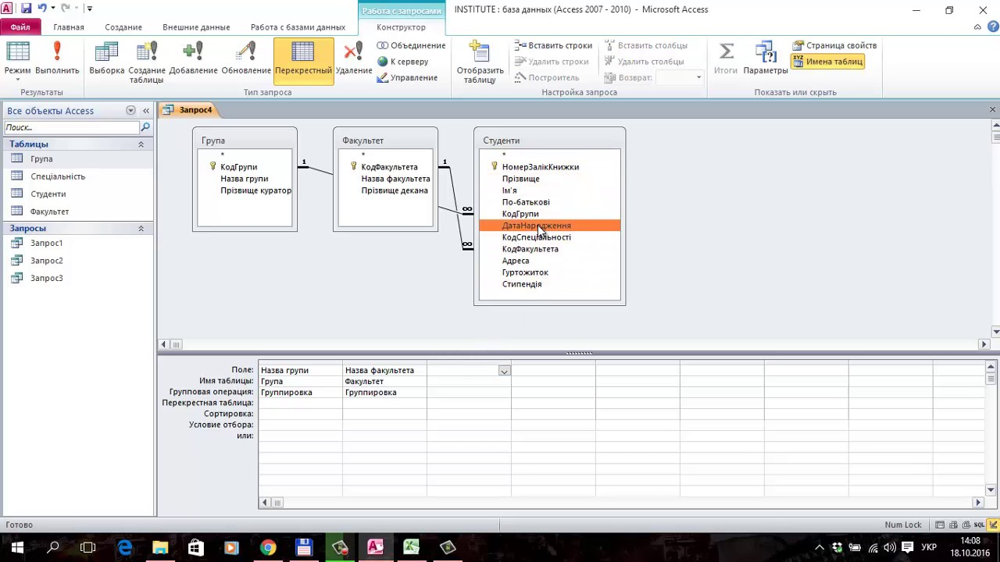

Робота з кількома таблицями
Перехресні запити дозволяють з'єднувати дані з кількох таблиць для створення детальних звітів або аналізу. Цей тип запитів базується на використанні ключів (первинних та зовнішніх) для об'єднання даних.
Перехресні запити зазвичай використовують оператори JOIN, наприклад, INNER JOIN, LEFT JOIN, RIGHT JOIN.
Приклад
Припустимо, є дві таблиці:
- Продукти (id_продукту, назва, ціна)
- Продажі (id_продажу, id_продукту, кількість, дата)
Щоб отримати назву продукту, кількість продажів та загальну виручку, використовується запит:
SELECT
Продукти.назва,
Продажі.кількість,
(Продажі.кількість * Продукти.ціна) AS Загальна_виручка
FROM
Продажі
INNER JOIN
Продукти
ON
Продажі.id_продукту = Продукти.id_продукту;
Результат запиту
| Назва продукту | Кількість продажів | Загальна виручка |
|---|---|---|
| Смартфон | 10 | 50,000 грн |
| Навушники | 20 | 10,000 грн |
| Ноутбук | 5 | 100,000 грн |
Відеоурок
Перегляньте відео, яке демонструє створення перехресних запитів:
Схема взаємозв’язків
Схематичне представлення, як таблиці пов'язані між собою:
Тестування запитів
Спробуйте створити власний перехресний запит:
Поширені запитання (FAQ)
Що таке INNER JOIN?
INNER JOIN — це тип об'єднання, який повертає лише ті рядки, які мають відповідні значення в обох таблицях.
У чому різниця між LEFT JOIN і RIGHT JOIN?
LEFT JOIN повертає всі рядки з лівої таблиці та відповідні рядки з правої таблиці. RIGHT JOIN працює аналогічно, але повертає всі рядки з правої таблиці.